Axon App · um serviço Nexus
Um novo jeito de acompanhar como os alunos estão.
Por meio de check-ins simples e acolhedores, o Axon cria um espaço para o aluno registrar como está se sentindo, compartilhar algo quando quiser e pedir para conversar quando precisar.
Tudo começa com uma pergunta simples.
Como está seu céu hoje?
O aluno não está escolhendo “bom” ou “ruim” só o que combina com este momento.
Por que o Axon existe?
Na rotina escolar, nem sempre é fácil para um aluno explicar espontaneamente como está se sentindo. O Axon cria um ponto de contato simples e recorrente, ajudando a transformar pequenos registros do dia a dia em mais contexto para o acompanhamento profissional.
Não para substituir uma conversa.
Para ajudar a criar espaço para ela acontecer.
Como funciona?
-
O aluno faz um check-in
Em poucos instantes, responde à pergunta “Como está seu céu hoje?” escolhendo o estado que mais combina com aquele momento.
-
Se quiser, pode contar um pouco mais
Depois do registro, o aluno pode compartilhar algo que aconteceu usando suas próprias palavras.
-
Quando precisar, pode pedir para conversar
A opção “Preciso conversar agora” cria um caminho direto para sinalizar ao profissional responsável que o aluno deseja conversar.
-
O profissional ganha mais contexto para acompanhar
Os registros ajudam a organizar o acompanhamento e a direcionar a atenção do psicólogo escolar, sempre dentro de uma estrutura de cuidado humano.
Em poucos instantes, responde à pergunta “Como está seu céu hoje?” escolhendo o estado que mais combina com aquele momento.
Depois do registro, o aluno pode compartilhar algo que aconteceu usando suas próprias palavras.
A opção “Preciso conversar agora” cria um caminho direto para sinalizar ao profissional responsável que o aluno deseja conversar.
Os registros ajudam a organizar o acompanhamento e a direcionar a atenção do psicólogo escolar, sempre dentro de uma estrutura de cuidado humano.
Experimente o Axon
Este é o mesmo fluxo que o aluno encontra no aplicativo. Escolha um clima e veja como um check-in acontece.
Protótipo funcional, com dados fictícios de demonstração.
Depois do check-in
E o que acontece depois que ele responde?
O registro do aluno não fica isolado no aplicativo. Ele pode acrescentar contexto ao acompanhamento feito pelo profissional responsável.
Registro do aluno
Contexto
Visão do profissional
Do registro ao cuidado
Cada check-in pode acrescentar contexto ao acompanhamento realizado pelo profissional responsável.
Em vez de depender apenas de momentos isolados, o psicólogo pode contar com uma visão organizada dos registros e sinalizações disponíveis no serviço.
- Organizar. Os registros ficam organizados para apoiar o acompanhamento.
- Sinalizar. Pedidos de conversa e outras sinalizações podem ganhar destaque para o profissional responsável.
- Acompanhar. O psicólogo continua sendo responsável por interpretar o contexto e conduzir o cuidado.
- Pedro Sol entre nuvens
- Maria Chuva Com comentário Pedido de conversa
- Beatriz Nublado Incongruência
- Lucas Céu limpo
- Sofia Inatividade
Mais contexto para saber onde olhar primeiro.
Quando o aluno pede para conversar, o sinal pode chegar de forma clara ao profissional responsável.
Tecnologia para organizar sinais.
Pessoas para decidir como cuidar.
O Axon não substitui o psicólogo.
Não substitui a escuta.
Não substitui a conversa.
Ajuda essa conversa a acontecer mais cedo.
Cuidar também é conectar.
O desenvolvimento emocional de um aluno não acontece em um único lugar. Escola, família e aluno fazem parte da mesma história.
Aluno, escola e família
Família
Uma rede de cuidado mais conectada ao desenvolvimento do aluno.
Aluno
Um espaço simples para registrar como está e pedir conversa quando precisar.
Escola
Mais contexto para o acompanhamento profissional dentro da rotina escolar.
Por trás de cada registro existe um aluno.
E por trás de cada aluno, existe uma história que importa.
O Axon faz parte de uma proposta maior.
A Nexus atua no desenvolvimento humano dentro da comunidade escolar, conectando diferentes formas de cuidado e acompanhamento para apoiar o aluno, a família e a escola.
O Axon convive com outras frentes de cuidado da Nexus Plantão Psicológico, Orientação Parental, Avaliação Fonoaudiológica e Desenvolvimento Institucional.
Algumas perguntas importantes.
Tecnologia e cuidado emocional precisam caminhar junto com clareza.
Não. O Axon não substitui avaliação ou acompanhamento profissional. Os registros ajudam a acrescentar contexto ao trabalho realizado pelas pessoas responsáveis pelo cuidado.
Não. O comentário é opcional. O aluno pode simplesmente registrar seu clima do dia e concluir o check-in.
O Axon oferece a opção "Preciso conversar agora", criando um caminho direto para sinalizar ao profissional responsável que o aluno deseja conversar.
O cuidado continua sendo humano. O Axon ajuda a organizar informações e sinalizações, mas a interpretação do contexto e as decisões de acompanhamento pertencem aos profissionais responsáveis.
Privacidade e proteção das informações fazem parte da estrutura necessária para o serviço. As regras de acesso, consentimento e tratamento dos dados devem seguir os protocolos definidos para a implantação do Axon em cada contexto escolar.
Cuidar hoje é proteger o futuro.
Conheça melhor o Axon e a proposta da Nexus para o cuidado dentro do ambiente escolar.

Quer contar um pouco mais?
Isso é só se você quiser. Você também pode pular sem problema.
Escreva algo para habilitar o envio.